2 Construct Validation
This chapter will focus on the evaluation of construct validity in educational and psychological instruments through factor analytic methods and psychometric network analysis.
2.1 Factor Analytic Methods
In this section, we will use factor exploratory factor analysis (EFA), confirmatory factor analysis (CFA), and principal component analysis (PCA) to evaluate the dimensionality of educational and psychological instruments. In the examples, we will use the following packages:
| Package | URL |
|---|---|
| DataExplorer | http://CRAN.R-project.org/package=DataExplorer |
| ggcorrplot | http://CRAN.R-project.org/package=ggcorrplot |
| psych | http://CRAN.R-project.org/package=psych |
| lavaan | http://CRAN.R-project.org/package=lavaan |
| semPlot | http://CRAN.R-project.org/package=semPlot |
| ggplot2 | http://CRAN.R-project.org/package=ggplot2 |
| mirt | http://CRAN.R-project.org/package=mirt |
| MASS | http://CRAN.R-project.org/package=MASS |
We will install these packages using install.packages() and then activate them in our R session using library() :
# Install the packages
install.packages(c("DataExplorer", "ggcorrplot", "psych", "lavaan", "semPlot",
"ggplot2", "mirt", "MASS"))
# Activate the required packages
library("DataExplorer") # for data summarization
library("ggcorrplot") # for creating correlation plots
library("psych") # for exploratory factor analysis
library("lavaan") # for confirmatory factor analysis
library("semPlot") # for creating path diagrams
library("ggplot2") # for general visualization tasks
library("mirt") # for simulating response data
library("MASS") # for simulating correlated multivariate dataExample 1: Synthetic Aperture Personality Assessment
In the first example, we will use the Synthetic Aperture Personality Assessment (SAPA)–a web-based personality assessment project (https://www.sapa-project.org/). The purpose of SAPA is to find patterns among the vast number of ways that people differ from one another in terms of their thoughts, feelings, interests, abilities, desires, values, and preferences (Condon & Revelle, 2014; Revelle et al., 2010). In this example, we will use a subset of SAPA (16 items) sampled from the full instrument (80 items) to develop online measures of ability. These 16 items measure four subskills (i.e., verbal reasoning, letter series, matrix reasoning, and spatial rotations) as part of the general intelligence, also known as g factor. The “sapa_data.csv” dataset is a data frame with 1525 individuals who responded to 16 multiple-choice items in SAPA. The original dataset is included in the psych package (Revelle, 2022). The dataset can be downloaded from sapa_data.csv. In addition, the R codes for the analyses presented in this section are available in example1.R.
Exploratory Data Analysis
We will begin our analysis by conducting exploratory data analysis (EDA). As you may remember from the CTT section, we use EDA to check the quality of our data and identify potential problems (i.e., missing values) in the data. In this section, we will import sapa_data.csv into R and review the variables in the dataset using descriptive statistics and visualizations.
First, we will import the data into R using the read.csv() function and save it as “sapa”.
sapa <- read.csv("sapa_data.csv", header = TRUE)Using the head() function, we can now view the first 6 rows of the sapa dataset:
head(sapa) reason.4 reason.16 reason.17 reason.19 letter.7 letter.33 letter.34 letter.58 matrix.45 matrix.46 matrix.47
1 0 0 0 0 0 1 0 0 0 0 0
2 0 0 1 0 1 0 1 0 0 0 0
3 0 1 1 0 1 0 0 0 1 1 0
4 1 0 0 0 0 0 1 0 0 0 0
5 0 1 1 0 0 1 0 0 1 1 0
6 1 1 1 1 1 1 1 1 1 1 1
matrix.55 rotate.3 rotate.4 rotate.6 rotate.8
1 1 0 0 0 0
2 0 0 0 1 0
3 0 0 0 0 0
4 0 0 0 0 0
5 0 0 0 0 0
6 0 1 1 1 0The dataset consists of 1525 rows (i.e., examinees) and 16 variables (i.e., SAPA items). We can get more information on the dataset using the introduce() and plot_intro() functions from the DataExplorer package (Cui, 2020):
DataExplorer::introduce(sapa)
DataExplorer::plot_intro(sapa)| rows | 1,525 |
| columns | 16 |
| discrete_columns | 0 |
| continuous_columns | 16 |
| all_missing_columns | 0 |
| total_missing_values | 25 |
| complete_rows | 1,523 |
| total_observations | 24,400 |
| memory_usage | 101,832 |
The plot above shows that all of the variables in the dataset are continuous. We also see that some of the variables have missing values but the proportion of missing data is very small (only 0.10%). To have a closer look at missing values, we can visualize the proportion of missingness for each variable using plot_missing() from DataExplorer.
DataExplorer::plot_missing(sapa)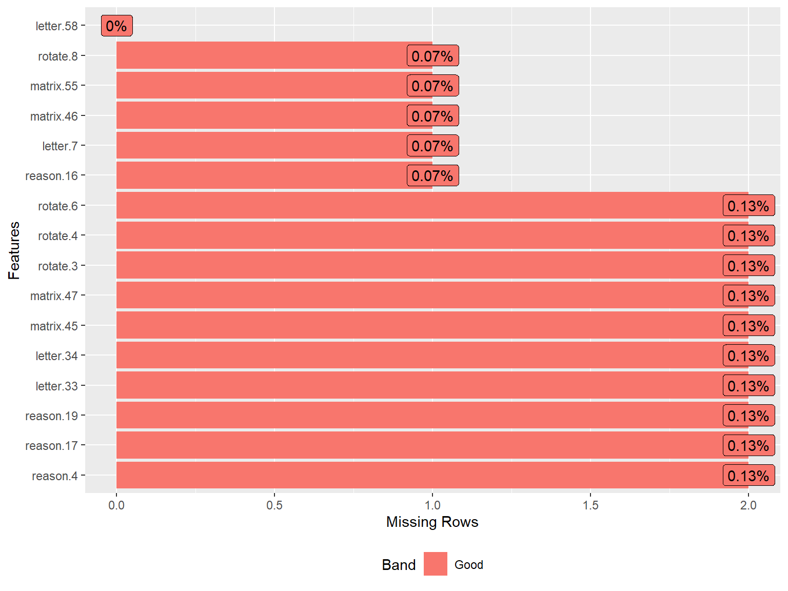
As we analyze the sapa dataset, we may start with the assumption that all SAPA items measure the same latent trait (general intelligence or g). However, given that the items come from different content areas (i.e., verbal reasoning, letter series, matrix reasoning, and spatial rotations), we must ensure that these items are sufficiently correlated with each other.
Since the SAPA items are dichotomously scored (i.e., 0: incorrect and 1: correct), we cannot use Pearson correlations, which could be obtained using the cor() function in R. Instead, we will compute the inter-item correlations among the SAPA items using the tetrachoric() function from psych and then extract “rho” (i.e., the correlation matrix of the items).
# Save the correlation matrix
cormat <- psych::tetrachoric(x = sapa)$rho
# Print the correlation matrix
print(cormat)| reason.4 | reason.16 | reason.17 | reason.19 | letter.7 | letter.33 | letter.34 | letter.58 | matrix.45 | matrix.46 | matrix.47 | matrix.55 | rotate.3 | rotate.4 | rotate.6 | rotate.8 | |
|---|---|---|---|---|---|---|---|---|---|---|---|---|---|---|---|---|
| reason.4 | 1.000 | 0.474 | 0.600 | 0.484 | 0.462 | 0.380 | 0.479 | 0.455 | 0.431 | 0.399 | 0.401 | 0.299 | 0.456 | 0.491 | 0.447 | 0.436 |
| reason.16 | 0.474 | 1.000 | 0.536 | 0.458 | 0.471 | 0.374 | 0.449 | 0.380 | 0.351 | 0.337 | 0.421 | 0.314 | 0.327 | 0.443 | 0.408 | 0.364 |
| reason.17 | 0.600 | 0.536 | 1.000 | 0.550 | 0.473 | 0.440 | 0.473 | 0.480 | 0.358 | 0.392 | 0.466 | 0.316 | 0.386 | 0.427 | 0.506 | 0.401 |
| reason.19 | 0.484 | 0.458 | 0.550 | 1.000 | 0.434 | 0.435 | 0.465 | 0.423 | 0.383 | 0.323 | 0.407 | 0.306 | 0.364 | 0.419 | 0.369 | 0.333 |
| letter.7 | 0.462 | 0.471 | 0.473 | 0.434 | 1.000 | 0.538 | 0.603 | 0.523 | 0.342 | 0.412 | 0.442 | 0.279 | 0.328 | 0.443 | 0.364 | 0.275 |
| letter.33 | 0.380 | 0.374 | 0.440 | 0.435 | 0.538 | 1.000 | 0.574 | 0.448 | 0.335 | 0.397 | 0.392 | 0.318 | 0.340 | 0.394 | 0.369 | 0.268 |
| letter.34 | 0.479 | 0.449 | 0.473 | 0.465 | 0.603 | 0.574 | 1.000 | 0.515 | 0.365 | 0.436 | 0.481 | 0.256 | 0.374 | 0.416 | 0.348 | 0.308 |
| letter.58 | 0.455 | 0.380 | 0.480 | 0.423 | 0.523 | 0.448 | 0.515 | 1.000 | 0.330 | 0.342 | 0.385 | 0.371 | 0.416 | 0.457 | 0.439 | 0.397 |
| matrix.45 | 0.431 | 0.351 | 0.358 | 0.383 | 0.342 | 0.335 | 0.365 | 0.330 | 1.000 | 0.511 | 0.403 | 0.348 | 0.307 | 0.328 | 0.266 | 0.309 |
| matrix.46 | 0.399 | 0.337 | 0.392 | 0.323 | 0.412 | 0.397 | 0.436 | 0.342 | 0.511 | 1.000 | 0.383 | 0.252 | 0.287 | 0.323 | 0.350 | 0.290 |
| matrix.47 | 0.401 | 0.421 | 0.466 | 0.407 | 0.442 | 0.392 | 0.481 | 0.385 | 0.403 | 0.383 | 1.000 | 0.362 | 0.407 | 0.402 | 0.341 | 0.342 |
| matrix.55 | 0.299 | 0.314 | 0.316 | 0.306 | 0.279 | 0.318 | 0.256 | 0.371 | 0.348 | 0.252 | 0.362 | 1.000 | 0.327 | 0.323 | 0.300 | 0.341 |
| rotate.3 | 0.456 | 0.327 | 0.386 | 0.364 | 0.328 | 0.340 | 0.374 | 0.416 | 0.307 | 0.287 | 0.407 | 0.327 | 1.000 | 0.771 | 0.665 | 0.675 |
| rotate.4 | 0.491 | 0.443 | 0.427 | 0.419 | 0.443 | 0.394 | 0.416 | 0.457 | 0.328 | 0.323 | 0.402 | 0.323 | 0.771 | 1.000 | 0.691 | 0.682 |
| rotate.6 | 0.447 | 0.408 | 0.506 | 0.369 | 0.364 | 0.369 | 0.348 | 0.439 | 0.266 | 0.350 | 0.341 | 0.300 | 0.665 | 0.691 | 1.000 | 0.665 |
| rotate.8 | 0.436 | 0.364 | 0.401 | 0.333 | 0.275 | 0.268 | 0.308 | 0.397 | 0.309 | 0.290 | 0.342 | 0.341 | 0.675 | 0.682 | 0.665 | 1.000 |
The correlation matrix above does not show any negative or low correlations–which is a very good sign! 👍. To check the associations among the items more carefully, we will also create a correlation matrix plot using the ggcorrplot() function from the ggcorrplot package (Kassambara, 2022). We will include the hc.order = TRUE argument to perform hierarchical clustering. This will look for groups (i.e., clusters) of items that are strongly associated with each other. If all SAPA items measure the same latent trait, we should see a single cluster of items.
ggcorrplot::ggcorrplot(corr = cormat, # correlation matrix
type = "lower", # print only the lower part of the correlation matrix
hc.order = TRUE, # hierarchical clustering
show.diag = TRUE, # show the diagonal values of 1
lab = TRUE, # add correlation values as labels
lab_size = 3) # Size of the labels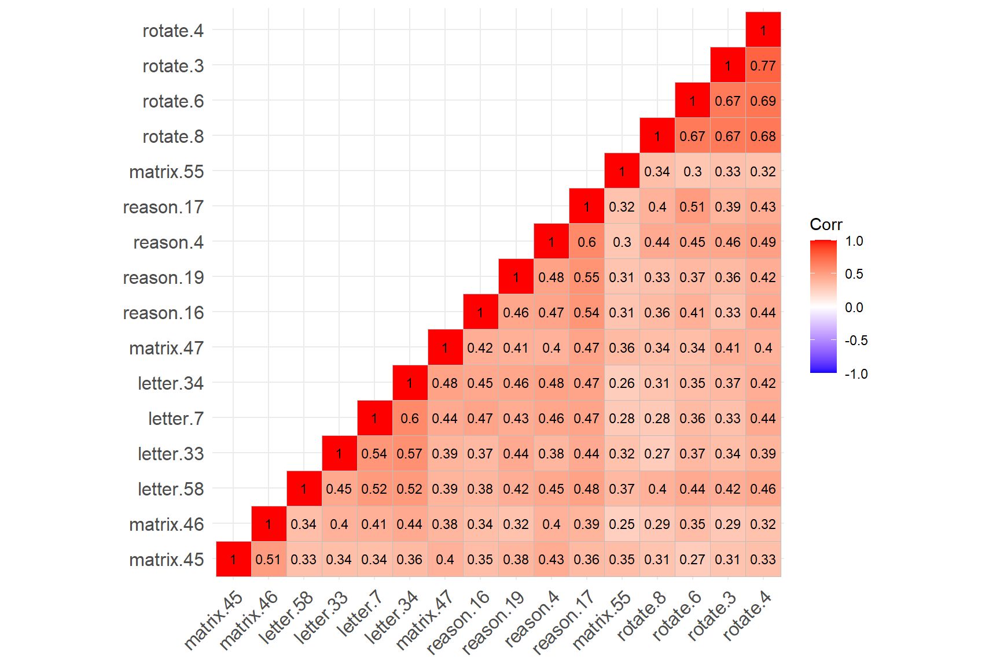
The figure above shows that the four rotation items have created a cluster (see the cluster on the top-right corner), while the remaining SAPA items have created another cluster (see the cluster on the bottom-left corner). The rotation items are strongly correlated with each other (not surprising given that they all focus on the rotation skills); however, the same items have relatively lower correlations with the other items in the dataset. Also, matrix.55 seems to have relatively low correlations with the items from both clusters.
The findings of hierarchical clustering suggest that the SAPA items may not necessarily be measuring a single latent trait. The items are very likely to be multidimensional. However, hierarchical clustering is not a direct test of dimensionality. To ensure that there is a single factor (i.e., latent trait) underlying the SAPA items, we need to perform factor analysis and evaluate the factor structure of the SAPA items (i.e., dimensionality).
Exploratory Factor Analysis
Factor analysis is a widely-used statistical technique that aims to explain the common variability among a set of observed variables and transform the variables into a reduced set of variables known as factors (or dimensions). At the core of factor analysis is the desire to reduce the dimensionality of the data from \(p\) observed variables to \(q\) factors, such that \(q < p\). During instrument development or when there are no prior beliefs about the dimensionality of an existing instrument, exploratory factor analysis (EFA) should be considered to investigate the factorial structure of the instrument. To perform EFA, we need to specify the number of factors to extract, how to rotate factors (if the expected number of factors > 1), and which type of estimation method should be used depending on the nature of the data (i.e., categorical, ordinal, or continuous).
The psych package includes several functions to perform EFA with different estimation methods. In this example, we will use the fa() function in the psych package to perform EFA. To use the function, we need to specify the following items:
- r = Response data (either raw data or a correlation matrix)
- n.obs = Number of observations in the data (necessary only when using a correlation matrix)
- nfactors = Number of factors that we expect to find in the data
- rotate = Type of rotation if \(n > 1\). We can use “varimax” for an orthogonal rotation that assumes no correlation between factors or “oblimin” for an oblique rotation that assumes factors are somewhat correlated
- fm = Factor analysis method. We will use “ml” (i.e., maximum likelihood estimation) for EFA
- cor = How to find the correlations when using raw data. For continuous variable, use
cor = "Pearson"(Pearson correlation); for dichotomous variables, usecor = "tet"(tetrachoric correlation); for polytomous variables (e.g., Likert scales), usecor = "poly"(polychoric correlation).
First, we will try a one-factor model, evaluate model fit, and determine whether a one-factor (i.e., unidimensional) structure is acceptable for the SAPA items:
# Try one-factor EFA model --> nfactors = 1
efa.model1 <- psych::fa(r = sapa, nfactors = 1, fm = "ml", cor = "tet")# Print the results
print(efa.model1, sort = TRUE) # Show the factor loadings sorted by absolute valueFactor Analysis using method = ml
Call: psych::fa(r = sapa, nfactors = 1, fm = "ml", cor = "tet")
Standardized loadings (pattern matrix) based upon correlation matrix
V ML1 h2 u2 com
rotate.4 14 0.75 0.57 0.43 1
reason.17 3 0.71 0.50 0.50 1
rotate.6 15 0.70 0.50 0.50 1
reason.4 1 0.70 0.49 0.51 1
rotate.3 13 0.70 0.48 0.52 1
letter.34 7 0.67 0.45 0.55 1
letter.58 8 0.66 0.43 0.57 1
letter.7 5 0.66 0.43 0.57 1
rotate.8 16 0.66 0.43 0.57 1
reason.19 4 0.63 0.40 0.60 1
reason.16 2 0.63 0.40 0.60 1
matrix.47 11 0.61 0.38 0.62 1
letter.33 6 0.61 0.38 0.62 1
matrix.46 10 0.54 0.30 0.70 1
matrix.45 9 0.53 0.28 0.72 1
matrix.55 12 0.47 0.22 0.78 1
ML1
SS loadings 6.64
Proportion Var 0.42
Mean item complexity = 1
Test of the hypothesis that 1 factor is sufficient.
The degrees of freedom for the null model are 120 and the objective function was 8.04 with Chi Square of 12198
The degrees of freedom for the model are 104 and the objective function was 1.85
The root mean square of the residuals (RMSR) is 0.08
The df corrected root mean square of the residuals is 0.09
The harmonic number of observations is 1523 with the empirical chi square 2331 with prob < 0
The total number of observations was 1525 with Likelihood Chi Square = 2801 with prob < 0
Tucker Lewis Index of factoring reliability = 0.742
RMSEA index = 0.13 and the 90 % confidence intervals are 0.126 0.135
BIC = 2039
Fit based upon off diagonal values = 0.96
Measures of factor score adequacy
ML1
Correlation of (regression) scores with factors 0.96
Multiple R square of scores with factors 0.92
Minimum correlation of possible factor scores 0.85The output shows the factor loadings for each item (see the ML1 column referring the first factor produced by the maximum likelihood (ML) method) and the proportion of explained variance (42%; see Proportion Var). The factor loadings seem to be high enough based on the rule of thumb of \(\lambda \geq 0.3\). We can determine model fit based on model fit indices of root mean square of residuals (RMSR), root mean square error of approximation (RMSEA), and Tucker-Lewis Index. We can use Hu & Bentler (1999)’s guidelines for these model fit indices: Tucker-Lewis index (TLI) > .95, RMSEA < .06, and RMSR near zero indicate good model fit. The fit measures in the output show that the one-factor model does not necessarily fit the sapa dataset very well.
In the output, \(h^2\) shows the amount of variance in the item/variable explained by the (retained) factors. It is the sum of the squared loadings (i.e., communality), \(u^2\), which is \(1 - h^2\), shows residual variance (i.e., uniqueness), and com (i.e., item complexity = \({(Σ λ_i^2)^2}/{Σ λ_i^4}\) where \(\lambda_i\) is the factor loading on the \(i^{th}\) factor) shows how much an item reflects a single construct (e.g., com equals 1 if an item loads only on one factor, 2 if evenly loads on two factors, etc.).
If we wanted to report the chi-square (\(\chi^2\)) test for our model, we would use the following part in the output: The total number of observations was 1525 with Likelihood Chi Square = 2801 with prob < 0. We can also extract these values from the model using efa.model1$STATISTIC, efa.model1$dof, efa.model1$PVAL,
Next, we will fit a two-factor model to the sapa dataset:
# Try two-factor EFA model --> nfactors=2
efa.model2 <- psych::fa(sapa, nfactors = 2, rotate = "oblimin", fm = "ml", cor = "tet")# Print the results
print(efa.model2, sort = TRUE)Factor Analysis using method = ml
Call: psych::fa(r = sapa, nfactors = 2, rotate = "oblimin", fm = "ml",
cor = "tet")
Standardized loadings (pattern matrix) based upon correlation matrix
item ML1 ML2 h2 u2 com
letter.34 7 0.80 -0.09 0.56 0.44 1.0
letter.7 5 0.78 -0.08 0.54 0.46 1.0
letter.33 6 0.70 -0.05 0.45 0.55 1.0
reason.17 3 0.67 0.08 0.52 0.48 1.0
reason.19 4 0.63 0.04 0.43 0.57 1.0
reason.16 2 0.60 0.07 0.42 0.58 1.0
matrix.46 10 0.59 -0.01 0.34 0.66 1.0
matrix.47 11 0.58 0.08 0.40 0.60 1.0
letter.58 8 0.57 0.14 0.45 0.55 1.1
reason.4 1 0.57 0.18 0.49 0.51 1.2
matrix.45 9 0.54 0.02 0.30 0.70 1.0
matrix.55 12 0.34 0.17 0.22 0.78 1.5
rotate.3 13 -0.04 0.89 0.74 0.26 1.0
rotate.8 16 -0.04 0.83 0.64 0.36 1.0
rotate.4 14 0.08 0.82 0.77 0.23 1.0
rotate.6 15 0.08 0.74 0.64 0.36 1.0
ML1 ML2
SS loadings 4.88 3.01
Proportion Var 0.31 0.19
Cumulative Var 0.31 0.49
Proportion Explained 0.62 0.38
Cumulative Proportion 0.62 1.00
With factor correlations of
ML1 ML2
ML1 1.00 0.64
ML2 0.64 1.00
Mean item complexity = 1.1
Test of the hypothesis that 2 factors are sufficient.
The degrees of freedom for the null model are 120 and the objective function was 8.04 with Chi Square of 12198
The degrees of freedom for the model are 89 and the objective function was 0.64
The root mean square of the residuals (RMSR) is 0.04
The df corrected root mean square of the residuals is 0.05
The harmonic number of observations is 1523 with the empirical chi square 564 with prob < 4.3e-70
The total number of observations was 1525 with Likelihood Chi Square = 969 with prob < 7.1e-148
Tucker Lewis Index of factoring reliability = 0.902
RMSEA index = 0.081 and the 90 % confidence intervals are 0.076 0.085
BIC = 317
Fit based upon off diagonal values = 0.99
Measures of factor score adequacy
ML1 ML2
Correlation of (regression) scores with factors 0.95 0.95
Multiple R square of scores with factors 0.90 0.91
Minimum correlation of possible factor scores 0.81 0.82Based on the factor loadings listed under the ML1 and ML2 columns, we see that the first 12 items are highly loaded on the first factor whereas the last four items (i.e., rotation items) are highly loaded on the second factor. This finding is aligned with what we have observed in the correlation matrix plot earlier.
The rest of the output shows that the first factor explains 31% of the total variance while the second factor explains 19% of the total variance (see Proportion Var). Compared to the one-factor model, the two-factor model explains an additional 8% of variance in the data. The two factors seem to be moderately correlated (\(r = .64\)). The model fit indices show that the two-factor model fits the data better, although the model fit indices still do not entirely meet the criteria for sufficient model fit. We can plot the factor loadings to get a sense of how the items relate to the two factors (note that this plot becomes much more complex as we plot 3 or more factors).
plot(efa.model2)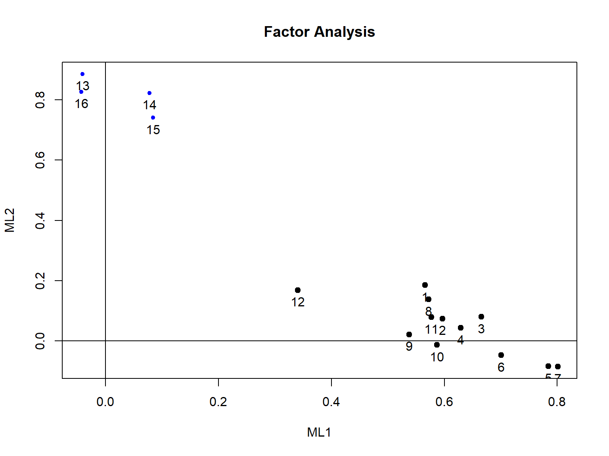
So far, the one-factor and two-factor models did not fit the data adequately. The two-factor model separated the rotation items from the rest of the SAPA items. Do we expect to find four meaningful factors based on each domain covered in the SAPA items (i.e., verbal reasoning, letter series, matrix reasoning, and spatial rotations)? If this is the case, we can try a four-factor model and evaluate the fit and loadings of the model.
# Try four-factor EFA model --> nfactors=4
efa.model4 <- psych::fa(sapa, nfactors = 4, rotate = "oblimin", fm = "ml", cor = "tet")# Print the results
print(efa.model4, sort = TRUE)Factor Analysis using method = ml
Call: psych::fa(r = sapa, nfactors = 4, rotate = "oblimin", fm = "ml",
cor = "tet")
Standardized loadings (pattern matrix) based upon correlation matrix
item ML3 ML4 ML1 ML2 h2 u2 com
rotate.3 13 0.88 0.03 -0.08 0.02 0.75 0.254 1.0
rotate.4 14 0.84 0.14 -0.07 -0.01 0.78 0.216 1.1
rotate.8 16 0.80 -0.13 0.08 0.06 0.65 0.353 1.1
rotate.6 15 0.72 -0.03 0.21 -0.05 0.66 0.345 1.2
letter.34 7 -0.01 0.79 0.00 0.01 0.64 0.365 1.0
letter.7 5 -0.01 0.76 0.03 -0.01 0.60 0.399 1.0
letter.33 6 0.02 0.66 0.02 0.02 0.49 0.507 1.0
letter.58 8 0.18 0.46 0.12 0.01 0.45 0.547 1.5
matrix.47 11 0.12 0.34 0.15 0.16 0.39 0.608 2.1
reason.17 3 0.00 0.03 0.89 0.01 0.83 0.167 1.0
reason.4 1 0.19 0.17 0.38 0.15 0.51 0.486 2.3
reason.19 4 0.07 0.28 0.34 0.11 0.44 0.563 2.3
reason.16 2 0.10 0.27 0.34 0.07 0.42 0.579 2.2
matrix.45 9 0.00 -0.01 -0.01 0.97 0.92 0.078 1.0
matrix.46 10 0.02 0.29 0.08 0.35 0.38 0.616 2.1
matrix.55 12 0.19 0.13 0.09 0.20 0.23 0.775 3.1
ML3 ML4 ML1 ML2
SS loadings 3.12 2.83 1.77 1.43
Proportion Var 0.19 0.18 0.11 0.09
Cumulative Var 0.19 0.37 0.48 0.57
Proportion Explained 0.34 0.31 0.19 0.16
Cumulative Proportion 0.34 0.65 0.84 1.00
With factor correlations of
ML3 ML4 ML1 ML2
ML3 1.00 0.53 0.53 0.38
ML4 0.53 1.00 0.63 0.48
ML1 0.53 0.63 1.00 0.41
ML2 0.38 0.48 0.41 1.00
Mean item complexity = 1.6
Test of the hypothesis that 4 factors are sufficient.
The degrees of freedom for the null model are 120 and the objective function was 8.04 with Chi Square of 12198
The degrees of freedom for the model are 62 and the objective function was 0.23
The root mean square of the residuals (RMSR) is 0.02
The df corrected root mean square of the residuals is 0.03
The harmonic number of observations is 1523 with the empirical chi square 163 with prob < 4.5e-11
The total number of observations was 1525 with Likelihood Chi Square = 355 with prob < 9.6e-43
Tucker Lewis Index of factoring reliability = 0.953
RMSEA index = 0.056 and the 90 % confidence intervals are 0.05 0.061
BIC = -99.1
Fit based upon off diagonal values = 1
Measures of factor score adequacy
ML3 ML4 ML1 ML2
Correlation of (regression) scores with factors 0.96 0.93 0.93 0.96
Multiple R square of scores with factors 0.91 0.86 0.87 0.93
Minimum correlation of possible factor scores 0.83 0.72 0.74 0.85The four-factor model yielded the best model fit results: \(RMSEA = 0.056\), \(RMSR = 0.02\), and Tucker Lewis Index is 0.953. However, our assumption of creating a separate factor for each domain did not entirely hold. The output shows that matrix.47 is mostly loaded on ML4 with the letter series items, and matrix.55 is not sufficiently loaded on any of the factors. At this point, we need to make a theoretical decision informed by the statistical output. Should we keep the matrix reasoning items in the dataset and use the four-factor model? Or, instead, can we remove the matrix items from the dataset and evaluate the factor structure with the remaining items (assuming three factors)? We could also fit a four-factor CFA model to the data to investigate the model fit based on the theoretical model that the items of each domain define a separate factor (i.e., forcing the matrix items to create a matrix reasoning factor, verbal reasoning items to create a verbal reasoning factor, and so on).
Now, let’s see the scree plot for the four-factor model. We will extract the eigenvalues from the common factor solution, create a separate dataset with them, and then visualize the values in a scree plot:
data_eigen <- data.frame(ev = efa.model4$values,
# 16 eigenvalues due to having 16 items in SAPA
factor_number=factor(1:16))
ggplot2::ggplot(data_eigen,
aes(x = factor_number, y = ev, group = 1)) +
geom_point() +
geom_line() +
theme_bw(base_size=15) +
xlab("Factor number") +
ylab("Eigenvalue")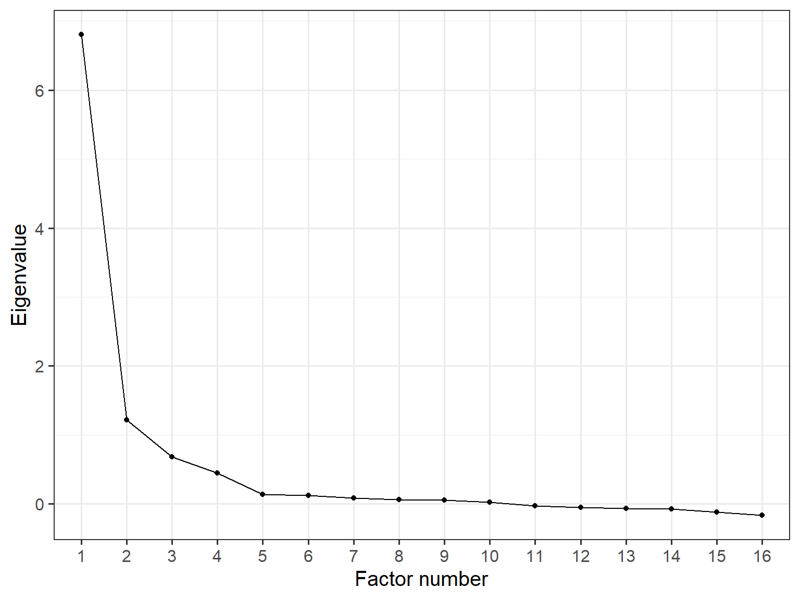
As the scree plot demonstrates, identifying a clear breaking (or elbow) point is quite difficult. In our example, if we accept the 4th point as the elbow point, then the scree plot suggests that the model should have four factors. However, there is a less pronounced slope change between 3 and 4 factors. So, the scree plot might lead us to consider either three- or four-factor solutions. At this point, the interpretability of the extracted factors and their factor loadings may serve as better criteria in the selection of a meaningful factor solution.
The psych package also includes an omega (\(\omega\)) function that fits a bi-factor EFA model to the data. This particular model assumes that there is a general factor associated with every item, as well as unique factors based on the constructs underlying the items. So, the function performs hierarchical factor analysis in the background, without requiring an explicit definition of the bi-factor structure.
Since the SAPA items are expected to measure the general intelligence (g), we can assume that each domain (verbal reasoning, letter series, matrix reasoning, and spatial rotations) will define a separate factor but all the SAPA items will define the general intelligence.
# Bi-factor EFA model
omega.model <- psych::omega(sapa, nfactors = 4, fm = "ml", poly = TRUE)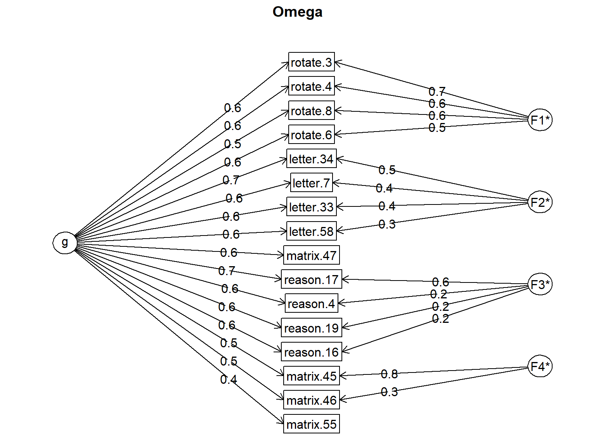
# Print the results
print(omega.model)Omega
Call: omegah(m = m, nfactors = nfactors, fm = fm, key = key, flip = flip,
digits = digits, title = title, sl = sl, labels = labels,
plot = plot, n.obs = n.obs, rotate = rotate, Phi = Phi, option = option,
covar = covar)
Alpha: 0.92
G.6: 0.93
Omega Hierarchical: 0.76
Omega H asymptotic: 0.8
Omega Total 0.94
Schmid Leiman Factor loadings greater than 0.2
g F1* F2* F3* F4* h2 u2 p2
reason.4 0.64 0.24 0.51 0.49 0.80
reason.16 0.59 0.21 0.42 0.58 0.81
reason.17 0.71 0.57 0.83 0.17 0.61
reason.19 0.60 0.22 0.44 0.56 0.81
letter.7 0.64 0.44 0.60 0.40 0.68
letter.33 0.59 0.38 0.49 0.51 0.70
letter.34 0.65 0.46 0.64 0.36 0.67
letter.58 0.60 0.26 0.45 0.55 0.79
matrix.45 0.53 0.80 0.92 0.08 0.30
matrix.46 0.52 0.29 0.38 0.62 0.69
matrix.47 0.56 0.20 0.39 0.61 0.81
matrix.55 0.41 0.23 0.77 0.75
rotate.3 0.56 0.66 0.75 0.25 0.42
rotate.4 0.62 0.63 0.78 0.22 0.49
rotate.6 0.58 0.54 0.66 0.34 0.52
rotate.8 0.52 0.60 0.65 0.35 0.42
With Sums of squares of:
g F1* F2* F3* F4*
5.49 1.56 0.76 0.52 0.80
general/max 3.51 max/min = 2.99
mean percent general = 0.64 with sd = 0.16 and cv of 0.26
Explained Common Variance of the general factor = 0.6
The degrees of freedom are 62 and the fit is 0.23
The number of observations was 1525 with Chi Square = 355 with prob < 9.6e-43
The root mean square of the residuals is 0.02
The df corrected root mean square of the residuals is 0.03
RMSEA index = 0.056 and the 10 % confidence intervals are 0.05 0.061
BIC = -99.1
Compare this with the adequacy of just a general factor and no group factors
The degrees of freedom for just the general factor are 104 and the fit is 2.03
The number of observations was 1525 with Chi Square = 3077 with prob < 0
The root mean square of the residuals is 0.11
The df corrected root mean square of the residuals is 0.12
RMSEA index = 0.137 and the 10 % confidence intervals are 0.133 0.141
BIC = 2315
Measures of factor score adequacy
g F1* F2* F3* F4*
Correlation of scores with factors 0.88 0.85 0.66 0.72 0.90
Multiple R square of scores with factors 0.78 0.71 0.43 0.52 0.81
Minimum correlation of factor score estimates 0.56 0.43 -0.14 0.04 0.62
Total, General and Subset omega for each subset
g F1* F2* F3* F4*
Omega total for total scores and subscales 0.94 0.90 0.83 0.78 0.71
Omega general for total scores and subscales 0.76 0.42 0.63 0.63 0.41
Omega group for total scores and subscales 0.11 0.48 0.20 0.15 0.30In the output, the factor loadings are for the general (g) and specific factors (F1 to F4) are provided, as well as the communality and uniquenesses values. In addition, there is a column called p2, which is considered a diagnostic tool for the appropriateness of a hierarchical model. It is defined as “percent of the common variance for each variable that is general factor variance”. This is calculated as \(g^2/h^2\).
The first two pieces of the reliability output refer to the coefficient alpha and G6 coefficients. \(\omega_{hierarchical}\) refers to the loadings of the general factor and \(\omega_{total}\) refers to reliability based on all the general and specific factor loadings. Under “Model test results”, we can see that there are two models considered–a model with general and specific factors and another model with no specific factors.
Regarding the part labeled as “Variance accounted for by group and specific factors”, the help page for the omega function through ?omega shows the following information:
The notion of omega may be applied to the individual factors as well as the overall test. A typical use of omega is to identify subscales of a total inventory. Some of that variability is due to the general factor of the inventory, some to the specific variance of each subscale. Thus, we can find a number of different omega estimates: what percentage of the variance of the items identified with each subfactor is actually due to the general factor. What variance is common but unique to the subfactor, and what is the total reliable variance of each subfactor. These results are reported in omega.group object and in the last few lines of the normal output.
It is a bit complicated but overall, Omega total refers to the total variance accounted for by the general factor as well as the subscales, whereas Omega general refers to the variance accounted for by the general factor.
Exercises
Run the four-factor EFA model using
rotate = "varimax"for orthogonal rotation and check the model fit (i.e., whether forcing the factors to be uncorrelated improved the model fit).The psych package help page for the
fafunction has the following information:
A very strong argument against using MLE is found in the chapter by MacCallum, Brown and Cai (2007) who show that OLS approaches produce equivalent solutions most of the time, and better solutions some of the time. This particularly in the case of models with some unmodeled small factors. (See sim.minor to generate such data.) Principal axes may be used in cases when maximum likelihood solutions fail to converge, although fm=“minres” will also do that and tends to produce better (smaller RMSEA) solutions.
Run the four-factor EFA model using fm = "pa" and fm = "minres" and check whether the resulting models produce smaller residuals and RMSEA values.
- Now, let’s simulate some ordinal data (e.g., Likert scales) using the Graded Response Model and check which estimator would yield better results. We will use the mirt (Chalmers, 2022) and MASS (Ripley, 2022) packages for data simulation (check out
?psych::simfor built-in simulation functions in the psych package). The following function simulates 12 items based on a two-factor model (6 items per factor). We can determine the sample size usingsample.sizeand the correlation between the two factors usingcor. The finalseedargument allows to fix the seed in the simulation so that we can create the same dataset (or different datasets) in the future. The first six items are mostly loaded on the first dimension, while the second set of 6 items are mostly loaded on the second dimension. The function returns a list consisting of the factor scores, item parameters, and response data.
# Let's define a simulation function called simGRMdata
simGRMdata <- function(sample.size, cor, seed) {
require("mirt")
require("MASS")
# Seed will allow us to generate the same data again later on
if(!is.null(seed)) {set.seed(seed)}
# Define multidimensional abilities (i.e., factor scores)
theta <- MASS::mvrnorm(n = sample.size,
# mean for factor scores
mu = rep(0, 2),
# variance-covariance matrix of matrix scores
Sigma = matrix(c(1,cor,cor,1),2,2))
# Generate slope (i.e., discrimination) parameters
a1 <- c(runif(n = 6, min = 0.9, max = 2.4), # First 6 items load heavily on the first factor
runif(n = 6, min = 0.1, max = 0.4)) # But they load low on the second factor
a2 <- c(runif(n = 6, min = 0.1, max = 0.4), # Second six items load low on the first factor
runif(n = 6, min = 0.9, max = 2.4)) # But they load heavily on the second factor
a <- as.matrix(cbind(a1, a2), ncol = 2)
# Generate intercept (i.e., difficulty) parameters
b1 <- runif(n = 12, min = 0.67, max = 2)
b2 <- b1 - runif(n = 12, min = 0.67, max = 1.34)
b3 <- b2 - runif(n = 12, min = 0.67, max = 1.34)
b <- as.matrix(cbind(b1, b2, b3), ncol = 3)
# Generate item responses based on GRM
resp <- mirt::simdata(a = a, d = b, itemtype = 'graded', Theta = theta)
# Return all the parameters and data
data <- list(theta = theta,
parameters = cbind(a, b),
response = resp)
return(data)
}
# Example dataset
mydata <- simGRMdata(sample.size = 1000, cor = 0.8, seed = 2023)
# View the factor scores
head(mydata$theta)
# View the parameters
head(mydata$parameters)
# View the response data
head(mydata$response)Using the function we defined above, generate datasets with different sample sizes and inter-factor correlations and then apply EFA to the response dataset to evaluate the dimensionality. You can use fm = "pa" and fm = "ml" in the estimation. Compare the performance of the two estimation methods.
Example 2: Financial Well-Being Scale
In the second example, we will use the Consumer Financial Protection Bureau (CFPB)’s Financial Well-Being Scale to demonstrate other factor analytic techniques. CFPB defines financial well-being as follows:
Financial well-being is a state of being wherein a person can fully meet current and ongoing financial obligations, can feel secure in their financial future, and is able to make choices that allow them to enjoy life.
To measure the construct of financial well-being, CFPB created the Financial Well-Being Scale that consists of ten rating scale items. The items cover all four elements of the CFPB’s definition of financial well-being: control over finances, capacity to absorb a financial shock, being on track to meet financial goals, and having the financial freedom to enjoy life, using both positive and negative phrasing. Figure 1 shows a list of the items and their response options.
Figure 1: Items in the Financial Well-Being Scale (Source: Consumer Financial Protection Bureau)
The CFPB’s technical report on the Financial Well-Being (FWB) Scale indicates that the researchers tested several different models, including a unidimensional model, several multidimensional models defined a priori by substantive item content, and other models indicated by initial exploratory analyses that reflected methodological considerations (such as positive versus negative item wording). Although the instrument was supposed to measure financial well-being as a single (i.e., unidimensional) construct, the researchers found that the bi-factor model fit the data best, with a general factor related to the latent financial well-being construct and two additional factors associated with the polarity of the item (i.e., whether the item was phrased negatively or positively).
For demonstration purposes, we will assume that we do not have any priori hypothesis about the factorial structure (i.e., dimensionality) of the FWB Scale, or we believe that the construct of financial well-being may be unidimensional though we are not entirely sure at this point. Therefore, we will begin our analysis with an exploratory approach–Parallel Analysis–to evaluate the dimensionality of this scale. Once we get an idea of what the factor structure may look like, we will switch to confirmatory factor analysis (CFA) to verify the structure. The dataset for this example is “finance.csv”. This dataset consists of 3822 individuals’ responses to 10 items in the FWB Scale, demographic variables, and additional variables related to financial well-being. The finance dataset can be downloaded from finance.csv. In addition, the R codes for the analyses presented in this section are available in example2.R.
Exploratory Data Analysis
We will begin our analysis by conducting exploratory data analysis to check our dataset. We will first import finance.csv into R, save it as “finance”, and then review the variables in the dataset using descriptive statistics and visualizations.
finance <- read.csv("finance.csv", header = TRUE)Using the head() function, we can now view the first 6 rows of the finance dataset:
head(finance) respondent_id age gender education employment
1 7740 35-44 Male High school degree/GED Work full-time for an employer or the military
2 13699 35-44 Male Some college/Associate Work full-time for an employer or the military
3 7267 35-44 Male High school degree/GED Refused
4 7375 25-34 Male High school degree/GED Work full-time for an employer or the military
5 10910 25-34 Male Bachelor's degree Work full-time for an employer or the military
6 11079 35-44 Female Bachelor's degree Homemaker
marital_status fwb1_1 fwb1_2 fwb1_3 fwb1_4 fwb1_5 fwb1_6 fwb2_1 fwb2_2 fwb2_3 fwb2_4 raise2000
1 Divorced/Separated 2 2 3 3 3 4 2 2 2 3 3
2 Divorced/Separated 3 3 3 3 3 3 3 3 3 3 4
3 Divorced/Separated 3 3 3 3 3 3 3 3 3 3 8
4 Married 3 3 3 3 3 3 3 3 3 3 2
5 Married 5 1 1 1 1 1 2 5 2 2 4
6 Married 1 3 2 3 3 3 3 2 1 4 4
financial_knowledge debt_collector hardship_food hardship_doctor
1 5 1 1 1
2 5 0 1 1
3 -1 -1 2 2
4 4 8 2 2
5 6 0 1 1
6 5 0 1 1The variables in the datasets are as follows:
- respondent_id: Respondent ID
- age: Age category
- gender: Male or Female
- education: Education level
- employment: Employment status
- marital_status: Marital status
- fwb1_1 to fwb1_6: First six items with 1=Not at all to 5=Completely
- fwb2_1 to fwb2_4: The last four items with 1=Never to 5=Always
- raise2000: Confidence in ability to raise $2000 in 30 days
- financial_knowledge: Overall financial knowledge (self-reported)
- debt_collector: Contacted by a debt collector in past 12 months
- hardship_food: Food didn’t last and didn’t have money to get more
- hardship_doctor: Any household member couldn’t afford to see doctor or go to hospital
As we are going to use the responses in this example, let’s save it as a separate dataset and then use the describe function from the psych package to examine the dataset:
response <- finance %>%
dplyr::select(dplyr::starts_with("fwb"))
psych::describe(response)| vars | n | mean | sd | min | max | range | se | |
|---|---|---|---|---|---|---|---|---|
| fwb1_1 | 1 | 3,822 | 2.89 | 1.24 | -4 | 5 | 9 | 0.020 |
| fwb1_2 | 2 | 3,822 | 3.08 | 1.12 | -4 | 5 | 9 | 0.018 |
| fwb1_3 | 3 | 3,822 | 2.68 | 1.20 | -4 | 5 | 9 | 0.019 |
| fwb1_4 | 4 | 3,822 | 3.14 | 1.05 | -4 | 5 | 9 | 0.017 |
| fwb1_5 | 5 | 3,822 | 2.86 | 1.25 | -4 | 5 | 9 | 0.020 |
| fwb1_6 | 6 | 3,822 | 3.24 | 1.14 | -4 | 5 | 9 | 0.018 |
| fwb2_1 | 7 | 3,822 | 2.48 | 1.20 | -4 | 5 | 9 | 0.019 |
| fwb2_2 | 8 | 3,822 | 3.27 | 1.27 | -4 | 5 | 9 | 0.020 |
| fwb2_3 | 9 | 3,822 | 2.21 | 1.15 | -4 | 5 | 9 | 0.019 |
| fwb2_4 | 10 | 3,822 | 2.82 | 1.14 | -4 | 5 | 9 | 0.018 |
The summary above shows that the minimum response value for the scale items is -4. The codebook for this dataset shows that missing responses are coded as -1 and -4 in the dataset. So, we will have to change these values to NA.
# Recode missing items
response <- apply(response, # data to apply the function
2, # 1 to apply to each row; 2 to apply to each column
function(x) ifelse(x %in% c(-1, -4), NA, x)) %>%
as.data.frame()Now, we can review the cleaned dataset. First, we will review if the response options have been properly utilized in each item.
apply(response, 2, table) fwb1_1 fwb1_2 fwb1_3 fwb1_4 fwb1_5 fwb1_6 fwb2_1 fwb2_2 fwb2_3 fwb2_4
1 671 382 634 269 605 237 894 367 1214 459
2 670 633 1178 617 892 688 1202 691 1294 1078
3 1272 1441 1139 1559 1236 1467 1001 1086 780 1285
4 797 983 478 998 572 750 415 866 320 648
5 406 376 387 372 509 674 304 804 207 345Next, we will visualize the data:
DataExplorer::introduce(response) rows columns discrete_columns continuous_columns all_missing_columns
1 3822 10 0 10 0
total_missing_values complete_rows total_observations memory_usage
1 68 3811 38220 155832DataExplorer::plot_intro(response)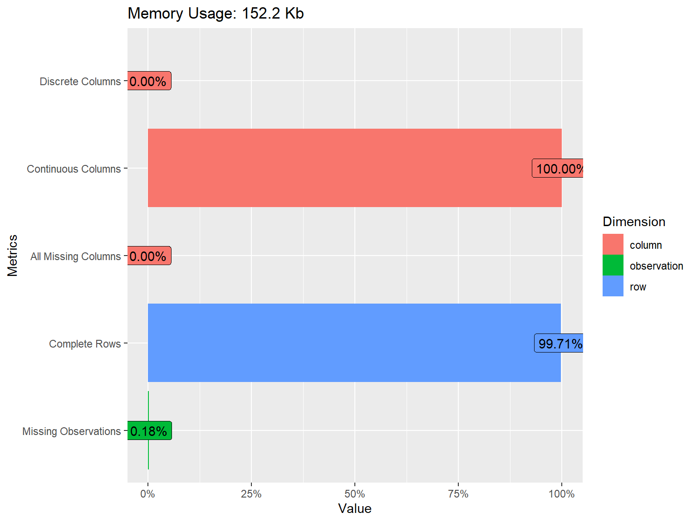
DataExplorer::plot_histogram(response) 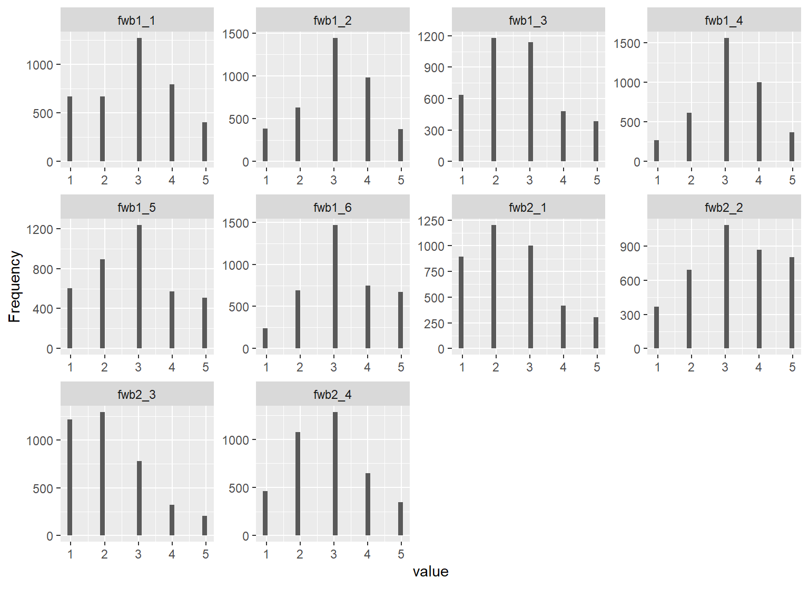
The dataset consists of 3822 rows (i.e., respondents) and 10 variables (i.e., FWB Scale Items). The response options are distributed nicely across the items, although some items such as fwb2_3 have a skewed distribution. To better understand the relationships among the items, we will also check the correlations. Since the items are polytomously scored, we will compute the inter-item correlations among the items using the polychoric() function from psych and then extract “rho” (i.e., the correlation matrix of the items).
# Save the correlation matrix
cormat <- psych::polychoric(x = response)$rho
# Print the correlation matrix
print(cormat)| fwb1_1 | fwb1_2 | fwb1_3 | fwb1_4 | fwb1_5 | fwb1_6 | fwb2_1 | fwb2_2 | fwb2_3 | fwb2_4 | |
|---|---|---|---|---|---|---|---|---|---|---|
| fwb1_1 | 1.000 | 0.727 | -0.528 | 0.729 | -0.519 | -0.488 | -0.632 | 0.711 | -0.556 | -0.500 |
| fwb1_2 | 0.727 | 1.000 | -0.538 | 0.742 | -0.436 | -0.506 | -0.564 | 0.647 | -0.486 | -0.458 |
| fwb1_3 | -0.528 | -0.538 | 1.000 | -0.552 | 0.601 | 0.654 | 0.637 | -0.556 | 0.553 | 0.581 |
| fwb1_4 | 0.729 | 0.742 | -0.552 | 1.000 | -0.451 | -0.491 | -0.574 | 0.672 | -0.538 | -0.499 |
| fwb1_5 | -0.519 | -0.436 | 0.601 | -0.451 | 1.000 | 0.522 | 0.574 | -0.530 | 0.512 | 0.493 |
| fwb1_6 | -0.488 | -0.506 | 0.654 | -0.491 | 0.522 | 1.000 | 0.545 | -0.504 | 0.469 | 0.545 |
| fwb2_1 | -0.632 | -0.564 | 0.637 | -0.574 | 0.574 | 0.545 | 1.000 | -0.689 | 0.687 | 0.643 |
| fwb2_2 | 0.711 | 0.647 | -0.556 | 0.672 | -0.530 | -0.504 | -0.689 | 1.000 | -0.621 | -0.532 |
| fwb2_3 | -0.556 | -0.486 | 0.553 | -0.538 | 0.512 | 0.469 | 0.687 | -0.621 | 1.000 | 0.596 |
| fwb2_4 | -0.500 | -0.458 | 0.581 | -0.499 | 0.493 | 0.545 | 0.643 | -0.532 | 0.596 | 1.000 |
The correlation matrix above shows negative correlations among the items due to positive/negative wording of the items in the scale. To put the items in the same direction, we will reverse-recode the negatively-worded items in the scale.
# First, let's save the original variable names
names_fwb <- colnames(response)
# Reverse code negatively-worded items 3,5,6,7,9, and 10
keys <- c(1,1,-1,1,-1,-1,-1,1,-1,-1)
response_final <- psych::reverse.code(keys,
items = response,
mini = rep(1, 10),
maxi = rep(5, 10))
# View the recoded dataset
head(response_final) fwb1_1 fwb1_2 fwb1_3- fwb1_4 fwb1_5- fwb1_6- fwb2_1- fwb2_2 fwb2_3-
[1,] 2 2 3 3 3 2 4 2 4
[2,] 3 3 3 3 3 3 3 3 3
[3,] 3 3 3 3 3 3 3 3 3
[4,] 3 3 3 3 3 3 3 3 3
[5,] 5 1 5 1 5 5 4 5 4
[6,] 1 3 4 3 3 3 3 2 5
fwb2_4-
[1,] 3
[2,] 3
[3,] 3
[4,] 3
[5,] 4
[6,] 2# Now let's change the names to the original names to avoid "-" added to the names
colnames(response_final) <- names_fwb
# Finally, recalculate the correlation matrix
cormat <- psych::polychoric(x = response_final)$rhoNext, we will check the associations among the items in the new dataset using a correlation matrix plot to confirm that the items are all positively correlated.
ggcorrplot::ggcorrplot(corr = cormat, # correlation matrix
type = "lower", # print only the lower part of the correlation matrix
hc.order = TRUE, # hierarchical clustering
show.diag = TRUE, # show the diagonal values of 1
lab = TRUE, # add correlation values as labels
lab_size = 3) # Size of the labels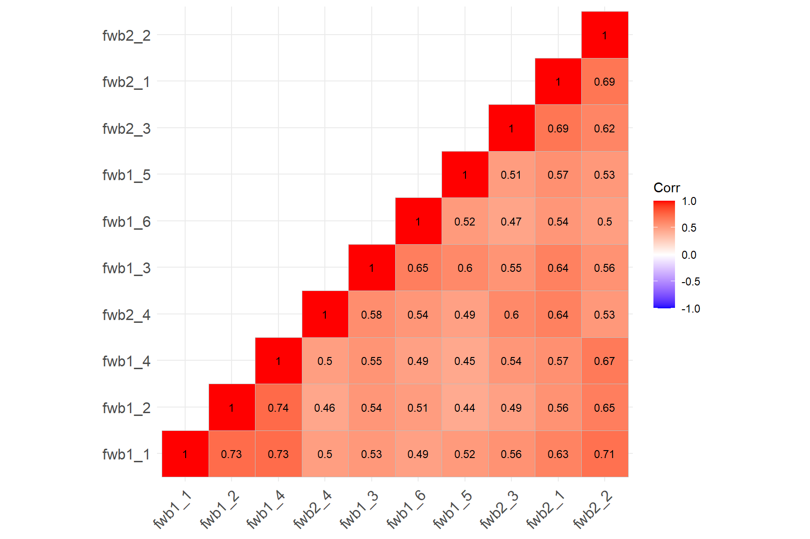
The correlation matrix plot confirms that all the items are now positively correlated with each other. We can begin to analyze the items. Note that if there is any item wording effect present in the data, reverse-coding the items would not necessarily fix the problem. We will see a good example of this situation in the following analyses.
Parallel Analysis
Parallel analysis compares the magnitude or size of eigenvalues generated from random data against the eigenvalues from the sample correlation matrix generated by the model. The main idea is that meaningful associations in the data should yield eigenvalues larger than would be expected by change.
parallel.test <- psych::fa.parallel(x = response_final,
fm="ml", # maximum likelihood
fa="fa", # principal axis factor analysis
cor="poly", # use polychoric correlations
n.iter = 20, # number of iterations
error.bars = TRUE)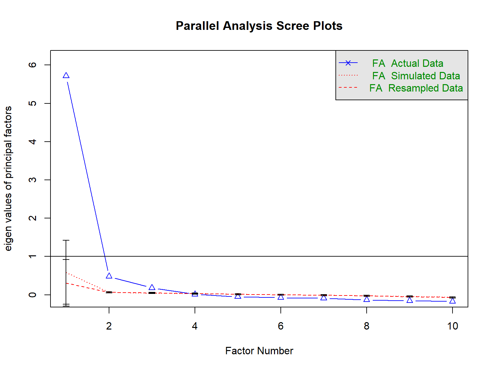
Parallel analysis suggests that the number of factors = 3 and the number of components = NA print(parallel.test)Call: psych::fa.parallel(x = response_final, fm = "ml", fa = "fa",
n.iter = 20, error.bars = TRUE, cor = "poly")
Parallel analysis suggests that the number of factors = 3 and the number of components = NA
Eigen Values of
eigen values of factors
[1] 5.71 0.48 0.18 0.01 -0.05 -0.08 -0.09 -0.13 -0.15 -0.17
eigen values of simulated factors
[1] 0.59 0.06 0.04 0.03 0.02 0.00 -0.01 -0.03 -0.04 -0.06
eigen values of components
[1] 6.13 0.91 0.63 0.52 0.38 0.34 0.32 0.28 0.25 0.24
eigen values of simulated components
[1] NAThe results of our parallel analysis suggest that there are possibly three factors underlying the responses to the FWB Scale. We can increase the number of iterations and try again, though it is very like that the result will remain the same.
Confirmatory Factor Analysis
In CFA, the researcher must specify the expected relationships between indicators (i.e., observed variables) and latent factors. In other words, one must have an explicit account of what factor(s) underlie each item. In this example, we will evaluate two scenarios about the FCW Scale: two-factor structure (separate dimensions based on positive and negative wording), and a bi-factor structure with a general dimension and separate dimensions based on positive and negative wording.
We will use the lavaan package (Rosseel et al., 2022) (see https://lavaan.ugent.be/ for more information on the package) to estimate our CFA models. To understand how to set up a CFA model in lavaan, we can use the following table on the lavaan website (https://lavaan.ugent.be/tutorial/syntax1.html).
| Formula Type | lavaan Operator | Meaning |
|---|---|---|
| Latent variable | =~ | is measured by |
| Regression | ~ | is regressed on |
| Residual co(variance) | ~~ | is correlated with |
| Intercept | ~1 | intercept |
The format used in lavaan is fairly simple, and resembles a series of linear models, written over several lines. In the model below, there are two latent variables, pw and nw, referring to the positive wording and negative wording. The latent variable names are followed by =~ which means “is manifested by”, and then the observed variables are listed, separated by the “+” sign.
# Define a two-factor model
model.two <- '# Define factors
pw =~ fwb1_3 + fwb2_4 + fwb2_1 + fwb1_5 + fwb1_6 + fwb2_3
nw =~ fwb1_2 + fwb1_4 + fwb1_1 + fwb2_2
# Variances and covariances
pw ~~ pw
nw ~~ nw
pw ~~ nw'Using the model above will give us factor loadings for the item, variances for the latent factors, and the covariance or correlation between the two factors we defined. Alternatively, we could use pw ~~ 0*nw to force orthogonal (uncorrelated) factors if our hypothesis about the underlying factor structure assumed uncorrelated factors. Also, this model will fix the factor loading for the first item associated with each factor to 1. We could free these items by fixing the variance of the factors to 1 to maintain the same degrees of freedom.
model.two <- '# Define factors
pw =~ NA*fwb1_3 + fwb2_4 + fwb2_1 + fwb1_5 + fwb1_6 + fwb2_3
nw =~ NA*fwb1_2 + fwb1_4 + fwb1_1 + fwb2_2
# Variances and covariances
pw ~~ 1*pw
nw ~~ 1*nw
pw ~~ nw'Once a model is defined properly, it can be used within the cfa function to fit the model to the data. In the following example, we will use estimator = "WLSMV" because our items are polytomous and this particular estimator is designed to deal with ordinal or categorical variables that may not necessarily have a normal distribution.
cfa.wlsmv <- lavaan::cfa(model.two, data = response_final, estimator = "WLSMV")Once the model has been fitted, the summary() function provides a nice summary of the fitted model. To better interpret the factor loadings, we request the standardized solutions by using standardized=TRUE.
summary(cfa.wlsmv, fit.measures=TRUE, standardized=TRUE)lavaan 0.6-12 ended normally after 30 iterations
Estimator DWLS
Optimization method NLMINB
Number of model parameters 21
Used Total
Number of observations 3811 3822
Model Test User Model:
Standard Robust
Test Statistic 164.740 602.565
Degrees of freedom 34 34
P-value (Chi-square) 0.000 0.000
Scaling correction factor 0.276
Shift parameter 5.125
simple second-order correction
Model Test Baseline Model:
Test statistic 38152.934 13355.485
Degrees of freedom 45 45
P-value 0.000 0.000
Scaling correction factor 2.863
User Model versus Baseline Model:
Comparative Fit Index (CFI) 0.997 0.957
Tucker-Lewis Index (TLI) 0.995 0.943
Robust Comparative Fit Index (CFI) NA
Robust Tucker-Lewis Index (TLI) NA
Root Mean Square Error of Approximation:
RMSEA 0.032 0.066
90 Percent confidence interval - lower 0.027 0.062
90 Percent confidence interval - upper 0.037 0.071
P-value RMSEA <= 0.05 1.000 0.000
Robust RMSEA NA
90 Percent confidence interval - lower NA
90 Percent confidence interval - upper NA
Standardized Root Mean Square Residual:
SRMR 0.031 0.031
Parameter Estimates:
Standard errors Robust.sem
Information Expected
Information saturated (h1) model Unstructured
Latent Variables:
Estimate Std.Err z-value P(>|z|) Std.lv Std.all
pw =~
fwb1_3 1.000 0.899 0.759
fwb2_4 0.882 0.022 39.604 0.000 0.793 0.705
fwb2_1 1.078 0.023 46.925 0.000 0.970 0.815
fwb1_5 0.904 0.028 32.685 0.000 0.813 0.656
fwb1_6 0.849 0.020 41.722 0.000 0.763 0.677
fwb2_3 0.903 0.024 38.403 0.000 0.812 0.712
nw =~
fwb1_2 1.000 0.850 0.773
fwb1_4 0.967 0.019 52.182 0.000 0.822 0.794
fwb1_1 1.184 0.022 54.041 0.000 1.007 0.821
fwb2_2 1.211 0.024 50.816 0.000 1.030 0.824
Covariances:
Estimate Std.Err z-value P(>|z|) Std.lv Std.all
pw ~~
nw 0.636 0.021 30.139 0.000 0.832 0.832
Variances:
Estimate Std.Err z-value P(>|z|) Std.lv Std.all
pw 0.809 0.030 26.932 0.000 1.000 1.000
nw 0.723 0.025 29.047 0.000 1.000 1.000
.fwb1_3 0.596 0.022 27.211 0.000 0.596 0.424
.fwb2_4 0.637 0.022 28.861 0.000 0.637 0.503
.fwb2_1 0.474 0.019 25.247 0.000 0.474 0.335
.fwb1_5 0.874 0.032 26.966 0.000 0.874 0.569
.fwb1_6 0.690 0.023 29.956 0.000 0.690 0.542
.fwb2_3 0.640 0.021 31.175 0.000 0.640 0.493
.fwb1_2 0.488 0.016 29.619 0.000 0.488 0.403
.fwb1_4 0.397 0.015 25.735 0.000 0.397 0.370
.fwb1_1 0.490 0.021 23.881 0.000 0.490 0.326
.fwb2_2 0.500 0.022 23.052 0.000 0.500 0.320To evaluate the model fit, we will use Hu & Bentler (1999)’s guidelines for model fit indices: (1) Comparative fit index (CFI) > .95; Tucker-Lewis index (TLI) > .95; and root mean square error of approximation (RMSEA) < .06. The output shows that the model fits the data very nicely!
In the output, the columns, Std.lv and Std.all, correspond to slightly different solutions. The Std.all solution standardizes the factor loadings by the standard deviation of both the predictor (the factor, X) and the outcome (the item, Y). In the variance standardization method Std.lv, we only standardize by the predictor (the factor, X). Comparing the two solutions, the loadings and variance of the factors are different but the residual variances are the same.
Using the semPaths function from the semPlot package, we can also visualize the model by creating a path diagram:
semPlot::semPaths(cfa.wlsmv, "std") # "std" gives standardized loadings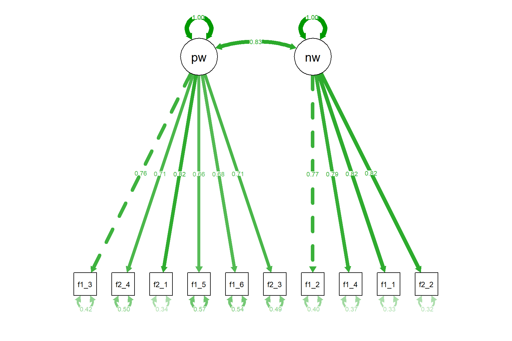
Let’s also run the same model with robust maximum likelihood (known as MLR estimator) and check out the results.
cfa.mlr <- lavaan::cfa(model.two, data = response_final, estimator = "MLR")
summary(cfa.mlr, fit.measures=TRUE, standardized=TRUE)lavaan 0.6-12 ended normally after 25 iterations
Estimator ML
Optimization method NLMINB
Number of model parameters 21
Used Total
Number of observations 3811 3822
Model Test User Model:
Standard Robust
Test Statistic 827.665 650.309
Degrees of freedom 34 34
P-value (Chi-square) 0.000 0.000
Scaling correction factor 1.273
Yuan-Bentler correction (Mplus variant)
Model Test Baseline Model:
Test statistic 20848.665 14266.368
Degrees of freedom 45 45
P-value 0.000 0.000
Scaling correction factor 1.461
User Model versus Baseline Model:
Comparative Fit Index (CFI) 0.962 0.957
Tucker-Lewis Index (TLI) 0.950 0.943
Robust Comparative Fit Index (CFI) 0.962
Robust Tucker-Lewis Index (TLI) 0.950
Loglikelihood and Information Criteria:
Loglikelihood user model (H0) -49717.248 -49717.248
Scaling correction factor 1.402
for the MLR correction
Loglikelihood unrestricted model (H1) -49303.416 -49303.416
Scaling correction factor 1.322
for the MLR correction
Akaike (AIC) 99476.497 99476.497
Bayesian (BIC) 99607.656 99607.656
Sample-size adjusted Bayesian (BIC) 99540.927 99540.927
Root Mean Square Error of Approximation:
RMSEA 0.078 0.069
90 Percent confidence interval - lower 0.074 0.065
90 Percent confidence interval - upper 0.083 0.073
P-value RMSEA <= 0.05 0.000 0.000
Robust RMSEA 0.078
90 Percent confidence interval - lower 0.073
90 Percent confidence interval - upper 0.083
Standardized Root Mean Square Residual:
SRMR 0.033 0.033
Parameter Estimates:
Standard errors Sandwich
Information bread Observed
Observed information based on Hessian
Latent Variables:
Estimate Std.Err z-value P(>|z|) Std.lv Std.all
pw =~
fwb1_3 1.000 0.899 0.758
fwb2_4 0.894 0.022 40.068 0.000 0.804 0.715
fwb2_1 1.068 0.024 44.145 0.000 0.960 0.808
fwb1_5 0.904 0.026 34.175 0.000 0.813 0.656
fwb1_6 0.848 0.019 44.935 0.000 0.762 0.676
fwb2_3 0.902 0.025 36.262 0.000 0.811 0.712
nw =~
fwb1_2 1.000 0.873 0.793
fwb1_4 0.957 0.017 56.853 0.000 0.835 0.806
fwb1_1 1.165 0.020 56.982 0.000 1.017 0.830
fwb2_2 1.132 0.024 48.177 0.000 0.988 0.791
Covariances:
Estimate Std.Err z-value P(>|z|) Std.lv Std.all
pw ~~
nw 0.651 0.021 31.578 0.000 0.829 0.829
Variances:
Estimate Std.Err z-value P(>|z|) Std.lv Std.all
pw 0.808 0.030 26.549 0.000 1.000 1.000
nw 0.762 0.025 29.939 0.000 1.000 1.000
.fwb1_3 0.597 0.022 26.857 0.000 0.597 0.425
.fwb2_4 0.619 0.021 29.059 0.000 0.619 0.489
.fwb2_1 0.491 0.019 25.906 0.000 0.491 0.348
.fwb1_5 0.873 0.032 27.445 0.000 0.873 0.569
.fwb1_6 0.691 0.023 30.000 0.000 0.691 0.543
.fwb2_3 0.642 0.021 30.895 0.000 0.642 0.494
.fwb1_2 0.449 0.016 27.664 0.000 0.449 0.371
.fwb1_4 0.375 0.015 25.055 0.000 0.375 0.350
.fwb1_1 0.468 0.020 23.986 0.000 0.468 0.312
.fwb2_2 0.584 0.021 27.271 0.000 0.584 0.374The results show that the estimated values for factor loadings, residuals, correlation between the factors have changed slightly when we used the MLR estimator. Compared with the WLSMV solution, the model fit indices are slightly worse, indicating that WLSMV provided a better solution. This is not necessarily surprising given that the items in the FWB scale are all polytomous.
In addition to the two-factor solution, we will also try the bi-factor model. We can achieve this either manually setting up the model with uncorrelated factors or using orthogonal=TRUE in the cfa function. We will use the easy way to set up our model. std.lv=TRUE is also a shortcut to get the factor variances fixed to 1 while getting free estimates of factor loadings for all items.
bi.model <- '# Define factors
g =~ fwb1_3 + fwb2_4 + fwb2_1 + fwb1_5 + fwb1_6 + fwb2_3 + fwb1_2 + fwb1_4 + fwb1_1 + fwb2_2
pw =~ fwb1_3 + fwb2_4 + fwb2_1 + fwb1_5 + fwb1_6 + fwb2_3
nw =~ fwb1_2 + fwb1_4 + fwb1_1 + fwb2_2'
bifactor.wlsmv <- cfa(bi.model, data=response_final, estimator = "WLSMV",
orthogonal=TRUE, std.lv=TRUE)
summary(bifactor.wlsmv, fit.measures=TRUE, standardized=TRUE)lavaan 0.6-12 ended normally after 69 iterations
Estimator DWLS
Optimization method NLMINB
Number of model parameters 30
Used Total
Number of observations 3811 3822
Model Test User Model:
Standard Robust
Test Statistic 41.084 194.922
Degrees of freedom 25 25
P-value (Chi-square) 0.022 0.000
Scaling correction factor 0.213
Shift parameter 2.283
simple second-order correction
Model Test Baseline Model:
Test statistic 38152.934 13355.485
Degrees of freedom 45 45
P-value 0.000 0.000
Scaling correction factor 2.863
User Model versus Baseline Model:
Comparative Fit Index (CFI) 1.000 0.987
Tucker-Lewis Index (TLI) 0.999 0.977
Robust Comparative Fit Index (CFI) NA
Robust Tucker-Lewis Index (TLI) NA
Root Mean Square Error of Approximation:
RMSEA 0.013 0.042
90 Percent confidence interval - lower 0.005 0.037
90 Percent confidence interval - upper 0.020 0.048
P-value RMSEA <= 0.05 1.000 0.989
Robust RMSEA NA
90 Percent confidence interval - lower NA
90 Percent confidence interval - upper NA
Standardized Root Mean Square Residual:
SRMR 0.016 0.016
Parameter Estimates:
Standard errors Robust.sem
Information Expected
Information saturated (h1) model Unstructured
Latent Variables:
Estimate Std.Err z-value P(>|z|) Std.lv Std.all
g =~
fwb1_3 0.883 0.019 47.545 0.000 0.883 0.745
fwb2_4 0.789 0.017 46.473 0.000 0.789 0.701
fwb2_1 0.994 0.016 61.613 0.000 0.994 0.836
fwb1_5 0.799 0.022 35.622 0.000 0.799 0.645
fwb1_6 0.750 0.019 38.577 0.000 0.750 0.665
fwb2_3 0.838 0.018 45.852 0.000 0.838 0.736
fwb1_2 0.684 0.018 37.475 0.000 0.684 0.622
fwb1_4 0.669 0.018 38.133 0.000 0.669 0.645
fwb1_1 0.828 0.019 44.188 0.000 0.828 0.675
fwb2_2 0.899 0.018 50.125 0.000 0.899 0.720
pw =~
fwb1_3 0.344 0.037 9.383 0.000 0.344 0.291
fwb2_4 0.048 0.029 1.636 0.102 0.048 0.043
fwb2_1 -0.166 0.038 -4.372 0.000 -0.166 -0.139
fwb1_5 0.196 0.036 5.508 0.000 0.196 0.158
fwb1_6 0.416 0.037 11.100 0.000 0.416 0.369
fwb2_3 -0.197 0.031 -6.297 0.000 -0.197 -0.172
nw =~
fwb1_2 0.578 0.022 25.766 0.000 0.578 0.525
fwb1_4 0.522 0.021 24.723 0.000 0.522 0.504
fwb1_1 0.591 0.024 24.567 0.000 0.591 0.482
fwb2_2 0.388 0.026 14.912 0.000 0.388 0.310
Covariances:
Estimate Std.Err z-value P(>|z|) Std.lv Std.all
g ~~
pw 0.000 0.000 0.000
nw 0.000 0.000 0.000
pw ~~
nw 0.000 0.000 0.000
Variances:
Estimate Std.Err z-value P(>|z|) Std.lv Std.all
.fwb1_3 0.507 0.027 19.105 0.000 0.507 0.361
.fwb2_4 0.641 0.022 29.182 0.000 0.641 0.506
.fwb2_1 0.398 0.026 15.129 0.000 0.398 0.281
.fwb1_5 0.857 0.032 26.963 0.000 0.857 0.559
.fwb1_6 0.537 0.031 17.492 0.000 0.537 0.422
.fwb2_3 0.558 0.025 22.324 0.000 0.558 0.429
.fwb1_2 0.409 0.018 22.409 0.000 0.409 0.338
.fwb1_4 0.354 0.016 22.204 0.000 0.354 0.330
.fwb1_1 0.468 0.021 22.428 0.000 0.468 0.311
.fwb2_2 0.603 0.020 30.476 0.000 0.603 0.386
g 1.000 1.000 1.000
pw 1.000 1.000 1.000
nw 1.000 1.000 1.000Let’s also see the results visually:
semPlot::semPaths(bifactor.wlsmv, "std") # "std" gives standardized loadings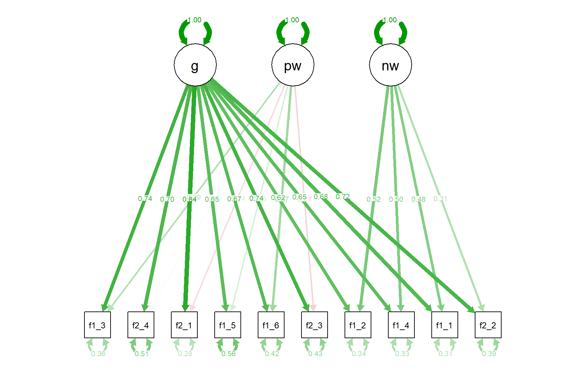
The bi-factor model also seems to fit the data nicely (even slightly better than the two-factor model) but we see that some factor loadings are negative. This is probably the strength of the general (g) factor we defined. This factor absorbs most of the variance in the items, leaving only small variance to be explained by the pw and nw factors. At this point, we may believe that there is an overall factor of financial well-being but it is hard to extract in a unidimensional model due to item wording effects. Using the bi-factor model could possibly partial out the variance due to item wording while accounting for a large amount of variance available in the items.
We can run a quick model comparison using the anova function.
anova(cfa.wlsmv, bifactor.wlsmv)Scaled Chi-Squared Difference Test (method = "satorra.2000")
lavaan NOTE:
The "Chisq" column contains standard test statistics, not the
robust test that should be reported per model. A robust difference
test is a function of two standard (not robust) statistics.
Df AIC BIC Chisq Chisq diff Df diff Pr(>Chisq)
bifactor.wlsmv 25 41.1
cfa.wlsmv 34 164.7 322 9 <2e-16 ***
---
Signif. codes: 0 '***' 0.001 '**' 0.01 '*' 0.05 '.' 0.1 ' ' 12.1.0.1 Principal Component Analysis (PCA)
We will finish this example with a small demonstration of how principal component analysis works. This time, we will use the last five variables in the finance dataset:
- raise2000: Confidence in ability to raise $2000 in 30 days (1 to 4, higher values indicate higher confidence)
- financial_knowledge: Overall financial knowledge (1 to 7, higher alues indicate higher knowledge)
- debt_collector: Contacted by a debt collector in past 12 months (1=yes, 0=no)
- hardship_food: Food didn’t last and didn’t have money to get more (1=never, 2=sometimes, 3=often)
- hardship_doctor: Any household member couldn’t afford to see doctor or go to hospital (1=never, 2=sometimes, 3=often)
Our goal is to reduce the number of these variables through PCA (rather than creating a latent variable based on these variables). After creating a separate dataset with these variables, we will deal with missing values. For each variable, -1 refers to “Refused to respond” and 8 refers to “Not sure”. So, we will recode these values as NA.
# Select the variables of interest
data <- finance %>%
dplyr::select(raise2000, financial_knowledge, debt_collector,
hardship_food, hardship_doctor)
# Recode missing items
data <- apply(data, # data to apply the function
2, # 1 to apply to each row; 2 to apply to each column
function(x) ifelse(x %in% c(-1, 8), NA, x)) %>%
as.data.frame()Next, we will use the principal function to perform PCA and extract one component.
pca_results1 <- psych::principal(
r = data,
nfactors = 1, # Number of components to extract
rotate="varimax",
cor = "mixed" # for a mixture of tetrachorics, polychorics, and so on
)
print(pca_results1)Principal Components Analysis
Call: psych::principal(r = data, nfactors = 1, rotate = "varimax",
cor = "mixed")
Standardized loadings (pattern matrix) based upon correlation matrix
PC1 h2 u2 com
raise2000 -0.87 0.75 0.25 1
financial_knowledge -0.47 0.22 0.78 1
debt_collector 0.77 0.59 0.41 1
hardship_food 0.88 0.78 0.22 1
hardship_doctor 0.80 0.64 0.36 1
PC1
SS loadings 2.98
Proportion Var 0.60
Mean item complexity = 1
Test of the hypothesis that 1 component is sufficient.
The root mean square of the residuals (RMSR) is 0.11
with the empirical chi square 911 with prob < 1.1e-194
Fit based upon off diagonal values = 0.95The output shows that one component explains 60% of the total variance. Now, let’s also try two components and see if this increases the amount of explained variance:
pca_results2a <- psych::principal(
r = data,
nfactors = 2,
rotate="varimax",
cor = "mixed"
)
print(pca_results2a)Principal Components Analysis
Call: psych::principal(r = data, nfactors = 2, rotate = "varimax",
cor = "mixed")
Standardized loadings (pattern matrix) based upon correlation matrix
RC1 RC2 h2 u2 com
raise2000 -0.79 0.37 0.76 0.239 1.4
financial_knowledge -0.14 0.98 0.97 0.026 1.0
debt_collector 0.77 -0.12 0.61 0.387 1.0
hardship_food 0.89 -0.15 0.81 0.192 1.1
hardship_doctor 0.84 -0.03 0.71 0.290 1.0
RC1 RC2
SS loadings 2.74 1.13
Proportion Var 0.55 0.23
Cumulative Var 0.55 0.77
Proportion Explained 0.71 0.29
Cumulative Proportion 0.71 1.00
Mean item complexity = 1.1
Test of the hypothesis that 2 components are sufficient.
The root mean square of the residuals (RMSR) is 0.09
with the empirical chi square 573 with prob < 1.5e-126
Fit based upon off diagonal values = 0.97The two components seem to explain almost 77% of the total variance. This is great because now we can use these two components instead of all five variables if we want to include them in a predictive model (leading to higher model parsimony). Let’s also see the plot for this solution:
biplot(pca_results2a,
main = "PCA with Financial Variables: Varimax Rotation")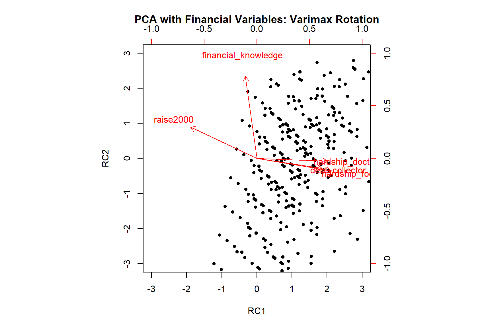
Let’s also try to estimate the same model with oblique rotation.
pca_results2b <- psych::principal(
r = data,
nfactors = 2,
rotate="promax",
cor = "mixed"
)
print(pca_results2b)Principal Components Analysis
Call: psych::principal(r = data, nfactors = 2, rotate = "promax", cor = "mixed")
Standardized loadings (pattern matrix) based upon correlation matrix
RC1 RC2 h2 u2 com
raise2000 -0.77 0.23 0.76 0.239 1.2
financial_knowledge 0.02 0.99 0.97 0.026 1.0
debt_collector 0.79 0.03 0.61 0.387 1.0
hardship_food 0.91 0.02 0.81 0.192 1.0
hardship_doctor 0.88 0.13 0.71 0.290 1.0
RC1 RC2
SS loadings 2.81 1.06
Proportion Var 0.56 0.21
Cumulative Var 0.56 0.77
Proportion Explained 0.73 0.27
Cumulative Proportion 0.73 1.00
With component correlations of
RC1 RC2
RC1 1.00 -0.34
RC2 -0.34 1.00
Mean item complexity = 1
Test of the hypothesis that 2 components are sufficient.
The root mean square of the residuals (RMSR) is 0.09
with the empirical chi square 573 with prob < 1.5e-126
Fit based upon off diagonal values = 0.97biplot(pca_results2b,
main = "PCA with Financial Variables: Promax Rotation")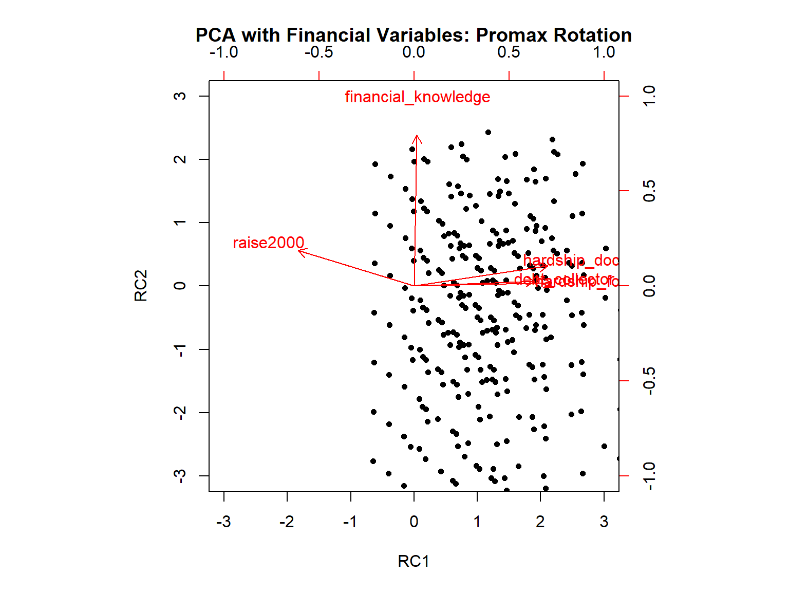
Exercises
Fit the two-factor CFA model to the data by forcing the correlation between the factors to be zero and compare the model fit to that of the correlated model we estimated earlier using the
anovafunction.Use the following model to fit a second-order (i.e., higher-order) model where the pw and nw factors define a higher-order factor of g (i.e., general factor). Note that there is no perfect way to specify a second-order factor when there are only two first-order factors. However, for the sake of our demonstration, we will give it a try and check its model it.
so.model <- '# Define factors
pw =~ fwb1_3 + fwb2_4 + fwb2_1 + fwb1_5 + fwb1_6 + fwb2_3
nw =~ fwb1_2 + fwb1_4 + fwb1_1 + fwb2_2
g =~ 1*pw + 1*nw
g ~~ g'- Nieto et al. (2021) show that there is an alternative way to model item wording effects in psychological instruments–the random intercept item factor analysis (RIIFA) model. In the RIIFA model introduced by Maydeu-Olivares & Coffman (2006), the researcher defines a factor associated with all items and an additional “wording” factor. This additional factor is also associated with all items. Its factor loadings are fixed to 1 but its variance is estimated (see Figure 1, Step 3 in Nieto et al. (2021)). Fit the RIIFA model to the FWB scale and evaluate the model fit. For this model, you will use the
responsedataset instead ofresponse_final.